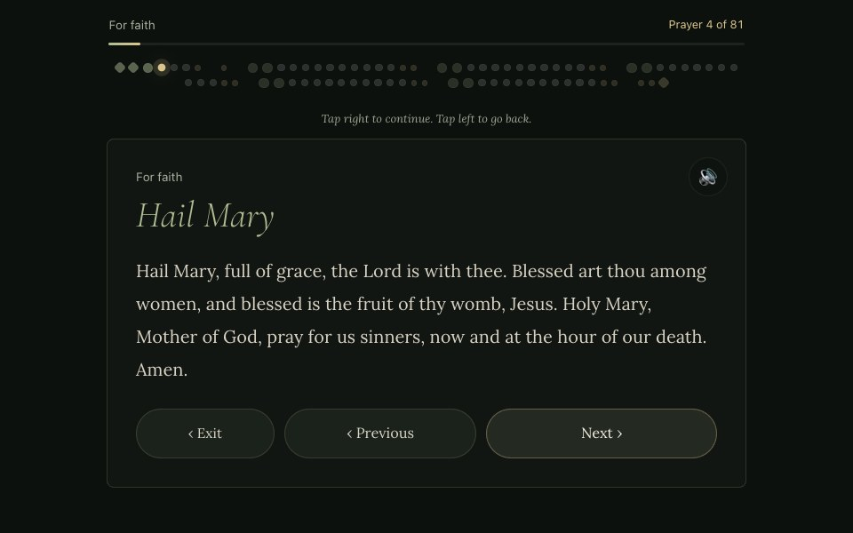
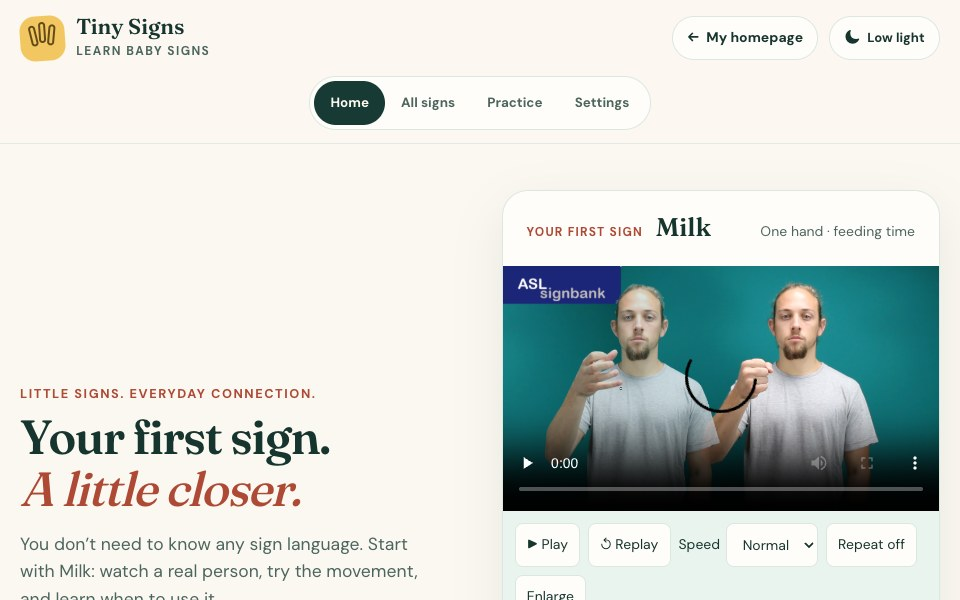
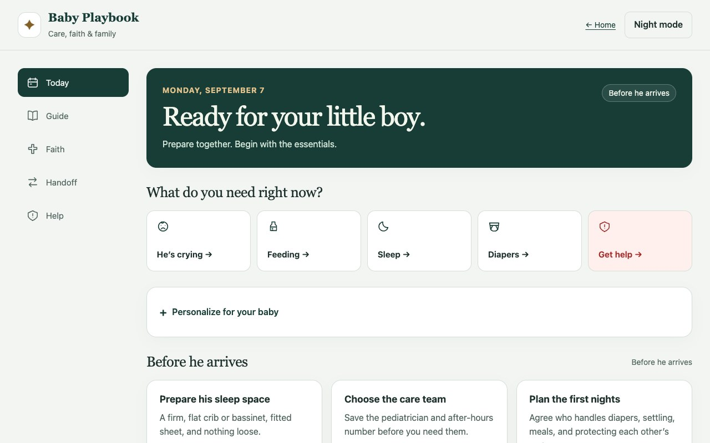
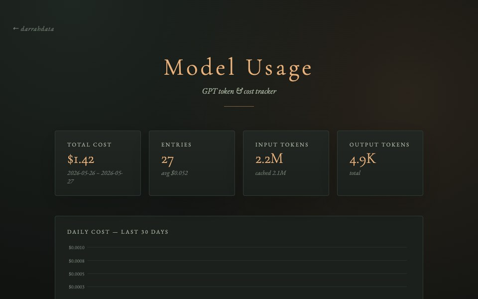

A small collection, made with care.
Daily Challenge
A little curiosity, every day.
Prayer, signs & family lifeThree questions from one of your apps.
Three questions · about a minute
Changes at local midnight. Progress stays in this browser.
Getting today’s challenge ready…
Prayer
Ave Maria
Your guide to the Rosary & Catholic prayer.

Family / Video-led practice
Tiny Signs
Learn signs for everyday family moments. Watch human demonstrations, slow them down, and practice recalling each sign.

More for family life
A different kind of help for each moment.
Family / Catholic parenting
Baby Playbook
A Catholic family guide with age-based care, daily faith practices, parent handoffs, and a saved emergency card.

Data / Everyday utility
Model Usage
Keep token usage and model costs in view, with cached inputs, running totals, and a 30-day cost chart.
